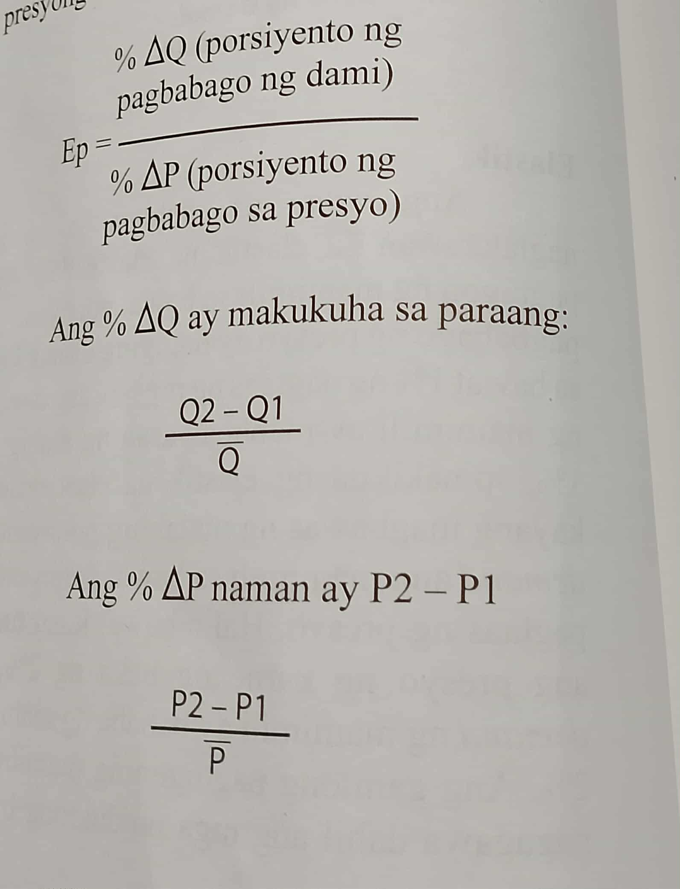
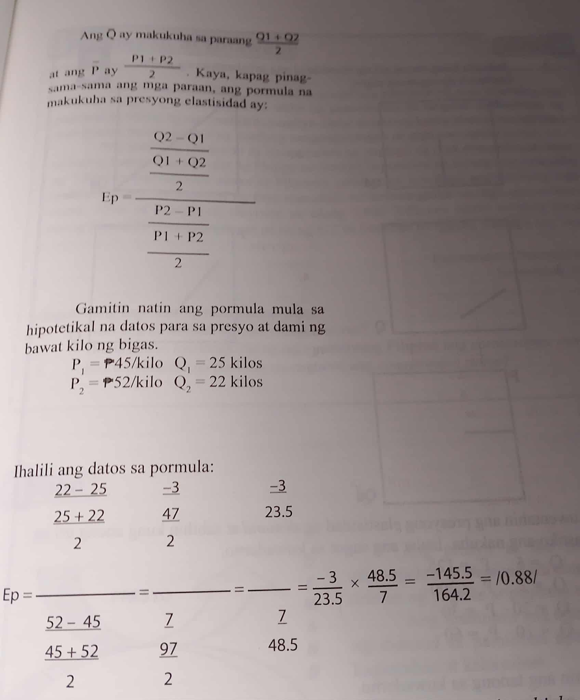

Antas ng pagtugonng bawat mamimili sapagbabago ng presyo.
Demand-Ang pagtugon g mamimili sa porsiyento ng pagabago ng presyo ay higit na mababa.
Supply-Koepisyente ay <1, Hindi maaaring bawasan ng malaki ng magtitinda ang daming suplay kumpara sa pagtaas ng presyo.
Demand-Ang value na mahigit sa isa
Supply-Koepisyente ay >1, Sa bawat 1% na pagbabago sapresyo, higit sa 1% ang pagbabagosa dami ng suplay.
Demand-Ito ang nagpapakita na iisang presyo ang umiiral kahit gaano karami ang daming bibilhing produkto
Supply-Koepisyente = ∞, Ang magtitinda ay hangdang magbenta ng iba’t-ibang uri ng suplay sa isang takdang presyo
Demand-Ang Kawalan ng kakayahan ng mamimili na magbawas ng demand sa bawat pagtaas ng presyo
Supply-Koepisyente= 0, Ang magtitinda ay walang kakayahang magdagdag o maglaking dami ng suplay kumpara sa pursiyentong pagtaas ng presyo.
Demand-Ang pagtugon ng mamimili sa porsiyento ng pagbabago ng presyo ay tinatawag na unitary kapag ang value na katumbas ng 1 ang nakuha sa kompyutasyon Supply-Koepisyente = 1, Kayang pantayan ng magtitindaang dami ng suplay sa anumang pagbabago ng presyo
 